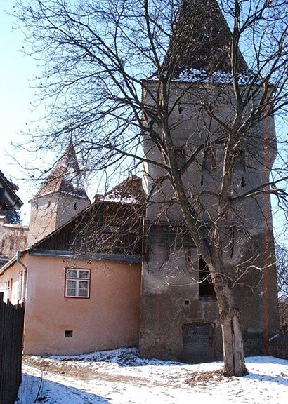

The Tower House

The Tower House, on the ramparts of the citadel town of Sighișoara, serves as the Trust’s central office, where we hold meetings, give presentations and provide books and leaflets on restoration practice.
We bought this fascinating 18th century building in 2003 and finished restoring it four years later. It is attached on the north side to the Leathermakers’ Tower, and on the south (connected by an arch) to the Butchers’ Tower. Once part of Sighișoara’s defence system, there are now eight towers remaining, each built by one of the city’s ancient Guilds. They were extended and re-built constantly between the 14th and 17th centuries and now that the restoration of the Leathermakers’ Tower is complete, it houses a permanent exhibition on heritage.